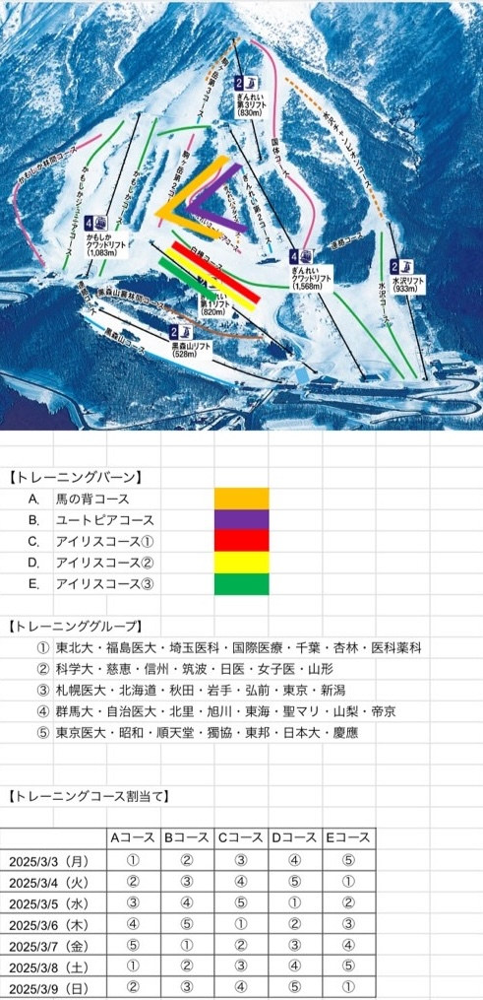

全競技共通
- インスペクションは基本的に横滑りで行ってください。コースが削れるため、ハの字でのインスペクションは禁止とします。
- インスペクション時の類似滑走は禁止とします。類似滑走をした選手は失格となるため注意してください。
- インスペクション時はビブを裏返しにして着用してください。
- コース状況や天候によっては係員からの追加の指示がある場合があります。その際は必ず指示に従ってください。
- 1つ前に出走した選手に追いつきそうな場合は、スタート係に申請することで1コール以上スタート間隔をあけることができます。
- 競技中、旗門不通過の有無に関わらずコース上で停止した場合は失格とします。
競技中失格となった場合は、速やかにコース外に退避してください。
- 各競技に適していない用具の使用、SL以外ではハーフメットの使用も禁止とします。
- 非公式リザルトはSEIKOスポーツリンクにて速報を確認できます。またゴールハウス付近の公式掲示板にも掲示があります。
- 公式リザルトは準備が整い次第、当日中にはHPにアップします。
SL競技
- スタートはDS選手を詰めた空なしスタートで行います。スタート間隔は30秒とします。
- 2本目のスタート順に関しては、SEIKO SPORTS LINKまたはゴールハウス付近の公式掲示板を確認してください。
- 2本目開始時間は予定と異なる場合もあるため、各自よくアナウンスを確認してください。
- セカンドカットについて、1本目上位100人のみ2本目の滑走を認めます。リバースは15番とします。
GS競技
- スタートはDS選手を詰めた空なしスタートで行います。スタート間隔は30秒とします。
- 2本目のスタート順に関しては、SEIKO SPORTS LINKまたはゴールハウス付近の公式掲示板を確認してください。
- 2本目開始時間は予定と異なる場合もあるため、各自よくアナウンスを確認してください。
- セカンドカットについて、1本目上位100人のみ2本目の滑走を認めます。リバースは15番とします。
- コースアウトした際のスイッチバックは禁止とします。
SG競技
- 競技時間の都合上、女子インスペクション後すぐに男子インスペクションを開始するため、大変混雑することが予想されます。
インスペクションの開始時間は厳守し、余裕を持って行動するようご協力お願いいたします。
入場制限時間以降はインスペクションを認めないこともございますので、十分に注意してください。
- スタートはDS選手を詰めた空なしスタートで行います。スタート間隔は40秒とします。
- 男子競技は、女子競技終了後コース整備を行った後に開始いたします。
予定と異なる場合もあるため、各自よくアナウンスを確認してください。
- コースアウトした際のスイッチバックは禁止とします。
- 安全面に配慮し、GSベースのポールセットとさせていただきます。何卒ご了承ください。
ゲレンデマップ

アップバーン

- 3/3(月)8：45よりスキー学校受付で全体でのバーンミーティングを行い、期間中の諸注意事項を説明いたします。
- 3/4(火)以降は、バーンミーティングを行わずにトレーニングバーン割当表に基づき割り当てられたコースにそのままセットすることとします。
- 練習方法などについては各グループごと話し合って決めていただきますようお願いいたします。
リフト券の購入方法
- 3/1(土)〜3/10(月)の期間で、大会用リフト1日券3,800円を用意しております。
- 大会用リフト券はメールまたは現地での申込となります。
各大学で日数や人数をまとめて申込していただきますようご協力お願い致します。
- 3/1(土)以降の申込は、現地でのみ承っております。
所定の書類を各大学で印刷し必要事項を記入した上で申込していただくようにお願い致します。
利用日前日の16：00までに、スキーセンターレラ2Fチケットカウンターに申込用紙をご提出下さい。
📥 申込書をダウンロード
- お受取りは利用日当日リフト運行開始30分前から、スキーセンターレラ2Fチケットカウンターでお受け取り頂けます。
- お受取りの際に代金をお支払いください。
- 支払方法は現金のみとなっておりますのでご注意ください。
- 特別リフト料金は、大会参加者に限ります。（監督・コーチ含む）
応援等でリフトを利用される場合は通常のリフト券をお買い求めください。
リフトマップ
- 大会期間中、出場選手はぎんれいクワッドリフトを使用し、国体コース上のスタート地点まで移動してください。
- リフトの運行は7:30からとなりますが、7:40までは大会役員を優先してご乗車ください。
- スキーを履かずに応援される方は、水沢リフトに乗車しゴール地点まで徒歩で向かうようお願いいたします。
その際他の一般客の方のご迷惑にならないように、なるべくコースの端を歩くようにしてください。
- リフト券は1回500円となります。
- 水沢リフトは、3/5(水)〜3/7(金)は8:00〜10:00、3/8(土)〜3/9(日)は8:00より終日運行しております。
- お帰りの際はコース脇を折るいて下るようにお願いいたします。
スキーセンターレラ案内図

- 当日受付はスキーセンターレラ1Fのゲストルームにて行います。
各大学の代表者1名は、会場到着後なるべく速やかに受付をお済ませください。
- リフト券は2Fのインフォメーション・リフト券売り場にてご購入ください。
荷物の保管について
- スタートハウス周辺に荷物を置くスペースを設置いたしますが、混雑することが予想されます。
各大学荷物を必要最低限にしていただきますようよろしくお願いします。
- 競技中不要な荷物がある場合は、田沢湖駅スキー場管理棟 1Fプレスルームに置くようにしてください。
詳しい場所はアクセスマップをご覧ください。